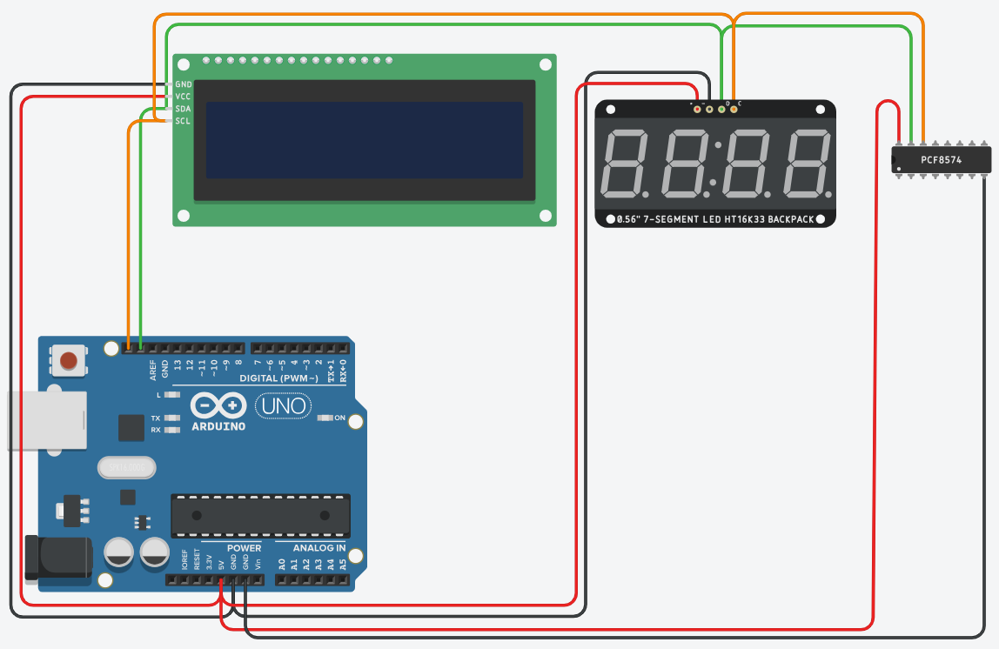

I²C staat voor Inter-Integrated Circuit: een seriële bus die Philips begin jaren tachtig ontwierp om meerdere chips binnen één toestel met elkaar te laten communiceren. Alles gebeurt over twee lijnen, een datalijn (SDA) en een kloklijn (SCL), en daar hangen alle chips samen aan. Elke chip op de bus heeft een adres, en met dat adres spreekt de master er telkens één aan. In dit labo hangt de PCF8574 aan die bus.
De datalijn heet SDA (Serial Data), de kloklijn SCL (Serial Clock). Daarnaast heeft elke chip voeding nodig, dus in de praktijk trek je vier draden: SDA, SCL, Vcc en GND.
Het woord bus slaat op de manier van aansluiten. Elke chip verbindt zijn SDA-pin met dezelfde SDA-lijn en zijn SCL-pin met dezelfde SCL-lijn, dus er loopt geen aparte draad per chip. Een tweede chip komt ernaast te hangen, en aan de kant van de Arduino verandert de bedrading niet.

Op een UNO R3 en op een Leonardo staan er twee pinnen met het opschrift SDA en SCL naast de AREF-pin. De schema's in deze cursus gebruiken die twee, want ze liggen op beide borden op dezelfde plaats. Op een UNO zijn dat dezelfde lijnen als A4 (SDA) en A5 (SCL), op een Leonardo dezelfde als pin 2 (SDA) en pin 3 (SCL). Welke pinnen het zijn ligt vast in de hardware van de chip, dus je kiest ze niet zelf.
Dezelfde lijn betekent ook dezelfde pin. Zodra je I²C gebruikt, zijn A4 en A5 op een UNO bezet en houd je nog vier analoge ingangen over, A0 tot en met A3. Op een Leonardo geldt hetzelfde voor de digitale pinnen 2 en 3. Heb je in dezelfde schakeling nog een potentiometer of een drukknop nodig, hou daar dan rekening mee bij het kiezen van je pinnen.
Twee, want elke chip takt af op dezelfde SDA- en SCL-lijn. Een vierde en een vijfde chip veranderen daar niets aan.
De bus is serieel: de acht bits van een byte gaan één na één over dezelfde datalijn, in plaats van elk over een eigen draad. Dat is waarom je met twee draden toekomt waar acht parallelle lijnen acht pinnen zouden kosten.
De bus is daarnaast synchroon: de klok loopt mee over SCL. Bij elke puls op de kloklijn staat er één bit op de datalijn.
Op een I²C bus bepaalt één toestel wanneer er iets over de lijn gaat. Dat is de master, en bij ons is dat de Arduino. De andere chips zijn slaves: ze antwoorden wanneer de master hen aanspreekt en beginnen zelf geen communicatie. De master zet ook de klok op SCL, en bepaalt zo het tempo waarop de bits over de lijn gaan. De standaard laat meerdere masters op één bus toe, maar in dit labo is er altijd één.
De data gaat wel in twee richtingen over diezelfde SDA-lijn. De master kan schrijven naar een slave, bijvoorbeeld om de uitgangen van een chip een waarde te geven, en lezen van een slave, bijvoorbeeld om de ingangen te controleren. Welke van de twee het wordt, zegt de master meteen bij het adres: naast de adresbits stuurt hij één bit mee dat lezen of schrijven betekent. Daarom vermeldt een datasheet soms twee adressen voor dezelfde chip, één om te schrijven en één om te lezen.
Alle chips hangen aan dezelfde twee draden en krijgen dus alles binnen wat de master verstuurt. Om er toch één aan te spreken begint de master elke boodschap met het adres van de chip die hij nodig heeft. Enkel de chip met dat adres antwoordt, de andere laten de boodschap voorbijgaan.
Zo'n adres is 7 bits lang, goed voor 128 combinaties. Zestien daarvan zijn door de standaard gereserveerd, dus er blijven er 112 over voor echte chips. Het adres zit ingebouwd in de chip en wordt door de fabrikant vastgelegd, zodat een temperatuursensor en een geheugenchip elkaar op één bus niet in de weg zitten. Bij sommige chips kan je een paar bits van dat adres zelf kiezen door adrespinnen aan Vcc of aan GND te leggen.
Hangen er twee chips met hetzelfde adres aan dezelfde bus, dan reageren ze allebei op dezelfde boodschap en antwoorden ze door elkaar. De master kan ze niet uit elkaar houden en wat je uitleest klopt niet meer. Zet je twee dezelfde chips op de bus, geef ze dan elk een ander adres.
Ben je niet zeker welk adres je chip heeft, dan laat je de I2C scanner de hele bus aflopen. Die spreekt alle adressen na elkaar aan en toont welke er antwoorden.
De adrespinnen. Staan ze bij beide chips op dezelfde manier aangesloten, dan hebben ze hetzelfde adres en zie je er maar één. Vind je helemaal niets terug, dan zit het meestal in de bedrading: SDA en SCL verwisseld, of een chip zonder voeding of massa.
Het aansturen van I²C hardware moet je gelukkig niet allemaal zelf programmeren. Dat doet de Wire-bibliotheek, die bij de Arduino IDE zit. Drie regels volstaan om een byte naar een chip te sturen:
Wire.beginTransmission(adres); // spreek de chip met dit adres aan
Wire.write(waarde); // zet een databyte klaar
Wire.endTransmission(); // verstuur alles, de bus is weer vrijHoe je een bibliotheek toevoegt staat bij bibliotheken gebruiken, en de volledige uitleg over schrijven naar en lezen van een chip staat bij werken met de PCF8574.